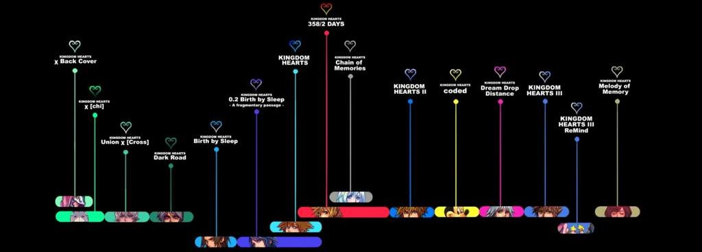
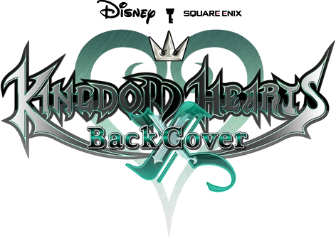
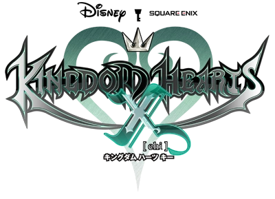
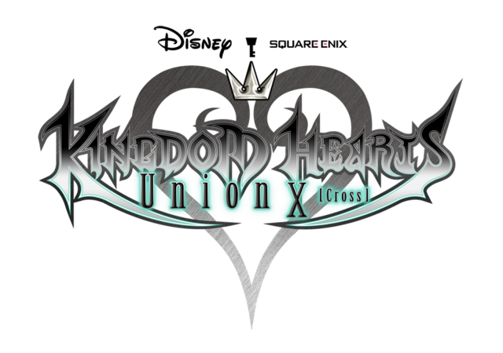
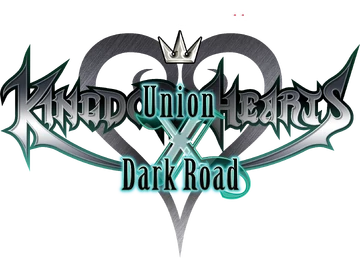
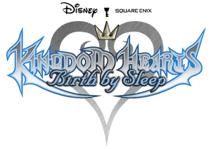

Kingdom Hearts, c’est avant tout une série de jeux vidéo qui a captivé un grand nombre de joueurs à travers le monde.
Chaque jeu enrichit l'univers de la saga avec des aventures uniques et des moments mémorables.
Retrouvez ici tous les titres et leurs descriptions.
Chronologie

Cette frise chronologique fait références à l'odre des jeux Kingdom Hearts par rapport à l'histoire de la saga, et non aux dates de sorties.
Les jeux Kingdom Hearts X remontent avant la naissance de notre héros Sora et nous plongue dans le contexte de la guerre des Keyblades. Cependant leurs jeux ne sont plus disponibles, mais propose toutefois des versions regardables.
Kingdom Hearts X

Kingdom Hearts: χ Back Cover est un film d'animation créé pour la compilation Kingdom Hearts: HD 2.8 Final Chapter Prologue. Il dure environ 1h et nous montre un autre point de vue sur les événements du jeu Kingdom Hearts: χ [chi] : celui des Oracles, les premiers disciples du Maître des Maîtres, alors que la Guerre des Keyblades approche.
Infos
date de sortie : 2017 (PlayStation 4) / 2020 (XBOX One) / 2021 (PC)
Plateformes : PlayStation 4, XBOX One, PC (Epic Games), Nintendo Switch
Type : Film
Développeur : Square Enix
Editeur : Square Enix

Kingdom Hearts: χ [chi] est un social game basé sur la Guerre des Keyblades, révélé au Tokyo Game Show 2012 à l'occasion des 10 ans de la série.
Il s'agit d'un jeu d'action de type MMORPG, avec des images en 2D.
Kingdom Hearts: χ [chi] a été officiellement arrêté le 1er Septembre 2016 et n'est maintenant plus jouable.
Infos
date de sortie : 2013
Plateformes : PC
Type : Jeu gratuit en ligne (Action-MMORPG)
Développeur : Success Corporation
Editeur : Square Enix

Kingdom Hearts: Union χ [Cross] est une mise à jour de Kingdom Hearts: Unchained χ, et la suite de Kingdom Hearts: χ [chi].
Correspondant à la "Saison 2" d’Unchained χ, cette suite est disponible sur les systèmes iOS et Android. Toutes les données sont conservées lors du passage à Union χ [Cross]. N'étant qu'une simple mise à jour, le fonctionnement et le gameplay sont identiques à ceux d’Unchained χ, bien que des systèmes de gameplay ont été ajoutés depuis lors.
Depuis la mise à jour 4.0.0 du 22 juin 2020, le jeu faisait partie de l'application commune Kingdom Hearts: Union χ Dark Road. (jeu mobile plus jouable).
Le jeu n'est maintenant plus jouable, mais propose une version permettant permettant aux joueurs de regarder l’histoire sans y jouer activement.
Infos
date de sortie : 2017
Plateformes : iOS & Android
Type : Jeu gratuit en ligne (Action-MMORPG)
Développeur : Success Corporation & BitGroove
Editeur : Square Enix

Kingdom Hearts: Dark Road est un jeu mobile développé sur les systèmes iOS et Android.
Annoncé le 23 janvier 2020, sous le nom de "Project Xehanort", il est centré sur la jeunesse de Xehanort, et explique plus particulièrement comment le jeune Maître est devenu un chercheur des Ténèbres.
Le jeu est gratuit dans sa version de base, mais inclura des micro-transactions. De plus, afin de jouer à Dark Road, il faut passer par l'application Kingdom Hearts: Union χ Dark Road, qui sert de lanceur commun à ce jeu et à Kingdom Hearts: Union χ [Cross].
Comme les autres jeux X, il n'est plus jouable, et a arrêté ses activités en 2021, mais propose une version permettant permettant aux joueurs de regarder l’histoire sans y jouer activement.
Infos
date de sortie : 2020
Plateformes : iOS & Android
Type : Jeu gratuit en ligne (Action-MMORPG)
Développeur : Square Enix
Editeur : Square Enix

Révélé lors du TGS 2007, le jeu explore les prémices de la série, avant l'ère de Sora, au temps glorieux des Maîtres de la Keyblade. Ce retour en arrière nous permet d'en apprendre davantage sur la Keyblade et les fondements de la série, notamment les Sept Princesses de Coeur recherchées plus tard par la terrible sorcière Maléfique mais aussi par Maître Xehanort.